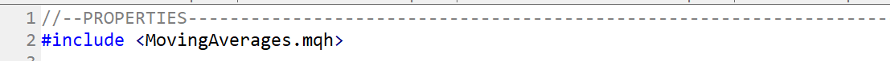

How to Make an MQL5 Indicator
About
Open the MQL5 editor
Create templete
Basic templete
Indicator sections:
Global variables
Include other indicators
Plot properties
Chart to plot
Plot attributures
How to create a MQL5 indicator
Include other indicators
